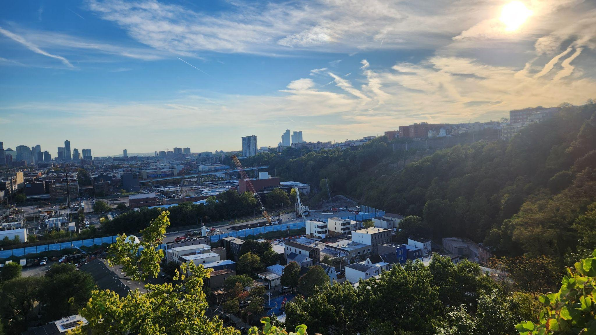

This is a project to help fund and organize habitat restoration on the Lower Palisades. The Lower Palisades is the portion of the NJ Palisades that are South of the George Washington Bridge.
Sign up to get emails about updates on the project and opportunities to get involved.
Join our mailing list for project updates and volunteer opportunities.
Or email us directly: info@lowerpalisades.org
More information about the project can be found in the video below. The presentation is roughly the first 22 minutes.